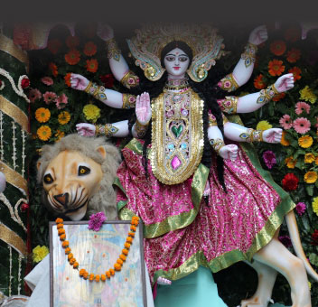

Bhunda Festival:
To keep the evil spirits at bay and to appease goddess Kali, the Bhunda festival is organized every year with animal sacrifice in attendance to please the deities. It is also celebrated to please Parsuram in some places.